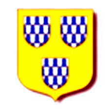

48071341 Cecily de Fontaines
Blev ca 30 år.

Född:
omkring 1198 Richmond Castle, Aberdeenshire, Scotland.
Död:
1228-02-02 Barnard Castle, Gainford, Durham, England.
Barn:
Personhistoria
1198?
Födelse omkring 1198 Richmond Castle, Aberdeenshire, Scotland
1228
Död 1228-02-02 Barnard Castle, Gainford, Durham, England
Källor